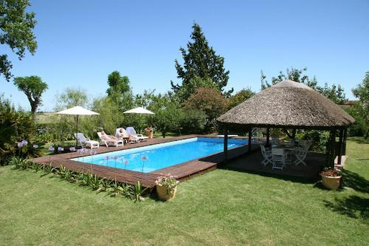

Instalaciones de primer nivel y actividades que hacen de cada visita una experiencia completa.

Una de las piscinas más amplias de la región para uso privado. Perfecta para refrescarse en los calurosos veranos de Paysandú.
El área de la piscina cuenta con espacio generoso alrededor para colocar reposeras, mesas y todo lo que necesites para pasar el día al sol. Ideal para familias con niños y grupos grandes.
La piscina está disponible exclusivamente para los huéspedes durante toda la estadía.
El asado es una parte fundamental de cualquier reunión en Uruguay. En La Paz tenemos el parrillero a la altura de la tradición.
El parrillero está equipado para asar para grupos grandes. Espacio generoso, buena ventilación y zona techada para que el asado sea un evento en sí mismo, con toda la comodidad.
Complementa perfectamente la cocina interior. Podés hacer el asado fuera y los postres y acompañamientos adentro, sin complicaciones.
Recorrés los campos de la estancia a caballo, una experiencia que conecta con la tradición gaucha y la naturaleza de Paysandú.
Las cabalgatas están disponibles para huéspedes de todas las edades y niveles de experiencia. Nuestros guías acompañan el recorrido para garantizar una experiencia segura y memorable.
Es una actividad infaltable para quienes visitan La Paz por primera vez, especialmente para los más chicos.
Una de las grandes ventajas de Estancia La Paz es el espacio. Hectáreas de campo, jardines y áreas verdes para disfrutar del aire libre.
Amplios espacios verdes rodeando la estancia. Perfectos para que los niños jueguen, para hacer actividades al aire libre o simplemente descansar bajo los árboles.
El campo de Paysandú ofrece paisajes que difícilmente se olvidan. Los atardeceres sobre la planicie son uno de los recuerdos que los huéspedes más valoran.
Lejos del ruido y el tráfico de la ciudad. El silencio, los sonidos naturales y el ritmo lento de la estancia hacen que la desconexión sea completa y genuina.